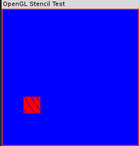

其他缓冲区技巧
1 使用缓冲区目标
在前缓冲区进行渲染的第一种方法就是告诉OpenGL希望在前缓冲区进行绘图。可以调用下面这个函数来实现这个目的。
void glDrawBuffer(GLenum mode);
如果mode参数指定为GL_FRONT，OpenGL就会在前缓冲区中进行渲染；如果指定为GL_BACK，那么渲染将在后缓冲区进行。OpenGL实现除了支持单纯的前缓冲区和后缓冲区进行渲染之外，还支持其他模式，如用于立体渲染的左和右缓冲区以及辅助缓冲区。
在前缓冲区进行渲染的第二种方法就是在OpenGL被初始化时简单地不要求进行双缓冲渲染。在各种操作系统平台上，OpenGL是以不同的方式进行初始化的。不过，使用GLUT，我们可以通过下面的代码对显示模式进行初始化，以使用RGB颜色和双缓冲渲染。
glutInitDisplayMode(GLUT_DOUBLE|GLUT_RGB)
为了进行单缓冲渲染，可以简单的忽略位标志GLUT_DOUBLE，如下所示
glutInitDisplayMode(GLUT_RGB)
进行单缓冲渲染时，如果希望把渲染结果实际绘制到屏幕上，需要调用 glFlush 或 glFinish，这点非常重要。
2 操纵深度缓冲区
深度缓冲区要填充的是深度值。在GLUT中请求一个深度缓冲区非常简单，只需在初始化显示模式时添加 GLUT_DEPTH 位标志。
glutInitDisplayMode(GLUT_RGB|GLUT_DOUBLE|GLUT_DEPTH);
我们知道，为了启用深度缓冲区进行深度测试，只需简单的进行下面这个调用。
glEnable(GL_DEPTH_TEST);
即使深度测试未被启用，如果深度缓冲区被创建，OpenGL也将把所有写入到颜色缓冲区的颜色片段对应的深度值写入到深度缓冲区。
但是，有时候我们可能希望在进行深度测试时临时禁止把值写入到深度缓冲区。我们可以使用 glDepthMask 函数来完成这个任务。
void glDepthMask(GLboolean mask);
把掩码设置为 GL_FALSE 将禁止写入深度值，但并不禁止用已经写入到深度缓冲区的值进行深度测试。使用 GL_TRUE 作为参数调用这个函数可以重新启用深度缓冲区的写入，这也是默认状态。
3 使用模板缓冲区
我们常常希望使用一个模板图案来渲染一个不规则的形状。在现实世界中，模板就是一块平面的纸板或其他材料，上面刻制了图案。在OpenGL世界中，模板缓冲区起到了一种类似的作用，我们可以使用渲染命令自己创建模板图案。
当我们使用GLUT时，我们在初始化显示模式时请求一个模板缓冲区。下面这行代码设置了带模板的双缓冲RGB颜色缓冲区。
glutInitDisplayMode(GLUT_RGB|GLUT_DOUBLE|GLUT_STENCIL);
在现代硬件加速的 OpenGL 实现中，模板操作相对较为快速。但是，我们仍然可以使用 glEnable/glDisable 打开或关闭这个功能。例如，我们可以使用下面这样代码打开模板测试。
glEnable(GL_STENCIL_TEST);
打开了模板测试之后，绘图就只在模板测试的位置进行。我们可以使用下面则个函数设置模板测试。
void glStencilFunc(GLenum func, GLint ref, GLuint mask);
模板函数func可以取下面任意一个值：GL_NEVER、GL_AWAYS、GL_LESS、GL_LEQUAL、GL_EQUAL、GL_GEQUAL、GL_CREATER和GL_NOTEQUAL。这些值告诉了OpenGL如何把已经存储在模板缓冲区中的值与ref参数所指定的值进行比较。假设参考值为A，存储在模板缓冲区中的值为B，则上面这些值分别代表“从不通过”、“总是通过”、“当A小于B时通过”、“当A小于等于B时通过”、“当A等于B时通过”、“当A大于等于B时通过”、“当A大于B时通过”和“当A不等于B时通过”。
3.1 创建模板图案
在开始绘图操作之前，我们必须确保模板缓冲区已被清除。这与使用 glClear 函数清除颜色和深度缓冲区的方法是一样的，只不过使用的位掩码是 GL_STENCIL_BUFFER_BIT 。例如，下面这行代码同时清除了颜色、深度和模板缓冲区。
glClear(GL_COLOR_BUFFER_BIT | GL_DEPTH_BUFFER_BIT | GL_STENCIL_BUFFER_BIT);
在清除操作中所使用的值是在之前调用下面这个函数时设置的。
glClearStencil(GLint s);
在启用了模板测试之后，渲染命令就使用 glStencilFunc 函数的参数与存储在模板缓冲区中的值进行策划死。根据模板测试的结果，值片段（颜色缓冲区中的颜色值）被写入或丢弃。在测试过程中，模板缓冲区本身也会被修改，进入模板缓冲区的值取决与 glStencilOp 函数是如何被调用的。
void glStencilOp(GLenum fail, GLenum zfail, GLenum zpass);
这些值告诉 OpenGL，如果模板测试失效，它该如何修改模板缓冲区的值。这些参数的合法值包括 GL_KEEP、GL_ZERO、GL_REPLACE、GL_INCR、GL_DECR、GL_INVERT、GL_INCR_WRAP和GL_DECR_WRAP。这些值分别对应于“保持当前值”、“把它设置为0”、“用参考值（取自glStencilFunc）代替”、“增加或减少这个值”、“反转这个值”以及“循环增加或减少这个值”。GL_INCR和GL_DECR增加或减少模板值，但是它的值限制在最小值和最大值的范围之内。最大/最小值是由模板缓冲区中每个特定位的深度决定的。GL_INCR_WRAP和GL_DECR_WRAP在值小于一个特定位的最小值或大于这个特定位的最大值时简单的对它进行循环增减。
3.2 示例代码
CANNOT INCLUDE FILE ./program/opengl/stencil.cpp
3.3 输出

3.4 分析
下面这两行代码将导致所有片段都无法通过模板测试。在此例中，ref和mask的至无关紧要，它们并不会被使用。
glStencilFunc(GL_NEVER, 0x0, 0x0); glStencilOp(GL_INCR, GL_INCR, GL_INCR);
但是，glStencilOp函数的参数导致了模板缓冲区中的值被写入（实际上是增加）。而不管屏幕上是否能看到什么东西，下面这几行代码绘制了一条白色螺旋线，线的颜色是白色的，使我们可以在蓝色背景中看到它，它也不会在颜色缓冲区中绘制，因为它总是无法通过模板测试（GL_NEVER）。事实上，我们之能够渲染到模板缓冲区！
接下来，我们使用下面这两行代码修改模板操作。
glStencilFunc(GL_NOTEQUAL, 0x1, 0x1); glStencilOp(GL_KEEP, GL_KEEP, GL_KEEP);
现在，绘图将在所有模板缓冲区中不等于0x1（GL_NOTEQUAL）的地方进行，也就似乎屏幕上未绘制螺旋线的地方。在这个例子中，接下来对 glStencilOp 的调用是可选的，但它可以告诉 OpenGL 保留模板缓冲区，用于以后所有的绘图操作。
和深度缓冲区一样，我们可以使用 glStencilMask 函数对模板缓冲区的写入设置掩码。
void glStencilMask(GLboolean mask);
把mask设置为false并不会禁用模板测试操作，但它可以防止把任何值写入到模板缓冲区中。